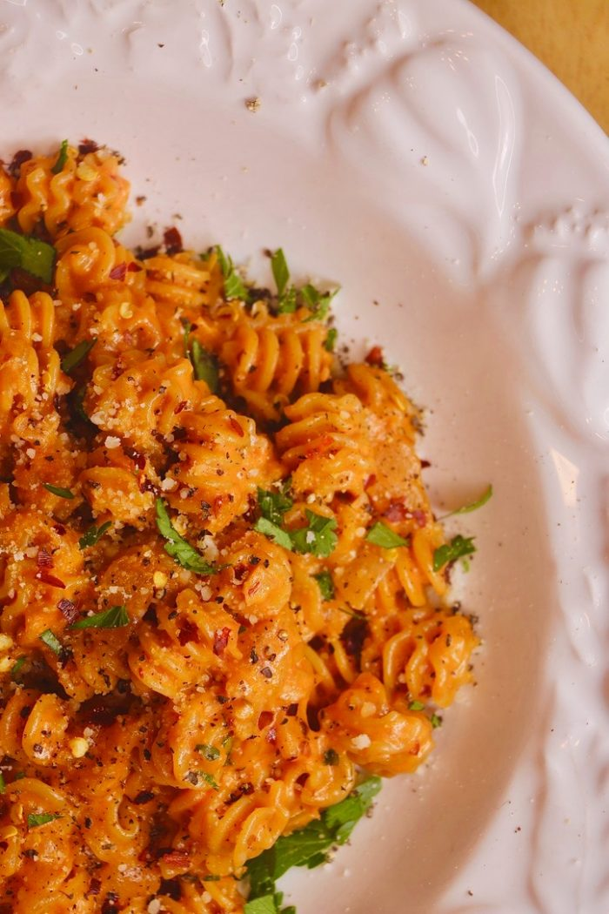

Food has always been a big part of my life. I love to cook because it brings you together with many people that can have insights you may have never known. Cooking has been a great way for many centuries for people to share their culture with the others around them.